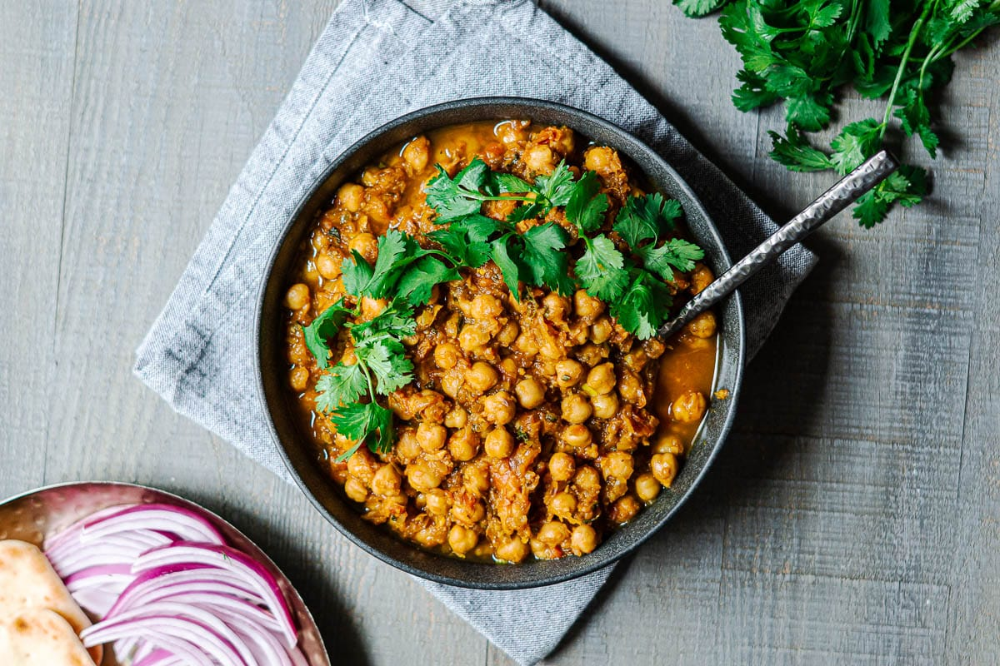

Chana Masala

Chana Masala, also known as Chickpea Curry, is a hearty and spicy Indian dish made with chickpeas cooked in a flavorful tomato-based gravy.
It's a staple in Indian cuisine and is appreciated for its robust and satisfying taste.
The dish is popular for being both vegan and gluten-free.
Ingredients required:
- 2 cans (400g each) of chickpeas, drained and rinsed
- 2 tablespoons vegetable oil
- 1 onion, finely chopped
- 2 cloves garlic, minced
- 1-inch piece of ginger, grated
- 2 tomatoes, pureed
- 2 tablespoons chana masala spice mix
- 1/2 teaspoon ground cumin
- 1/2 teaspoon ground coriander
- Salt to taste
- Fresh cilantro leaves for garnish
Instructions:
- Heat oil in a pan over medium heat. Add chopped onions and sauté until they become translucent.
- Add minced garlic and grated ginger, and sauté for another minute.
- Stir in the chana masala spice mix, ground cumin, and ground coriander. Cook for a few minutes until the spices are fragrant.
- Add the tomato puree and cook until the oil starts to separate from the mixture.
- Add the chickpeas and salt. Simmer for 10-15 minutes, allowing the flavors to meld.
- Garnish with fresh cilantro leaves and serve with rice or naan.